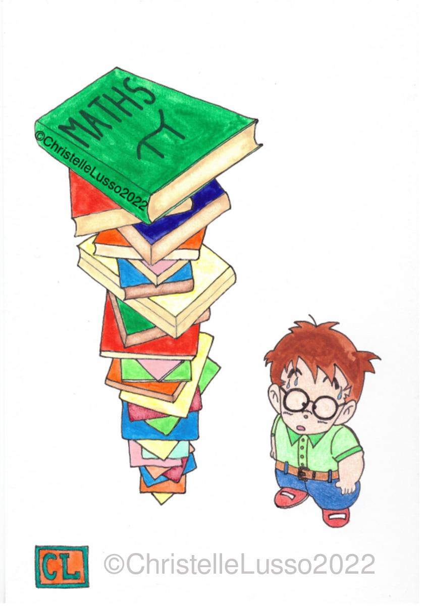
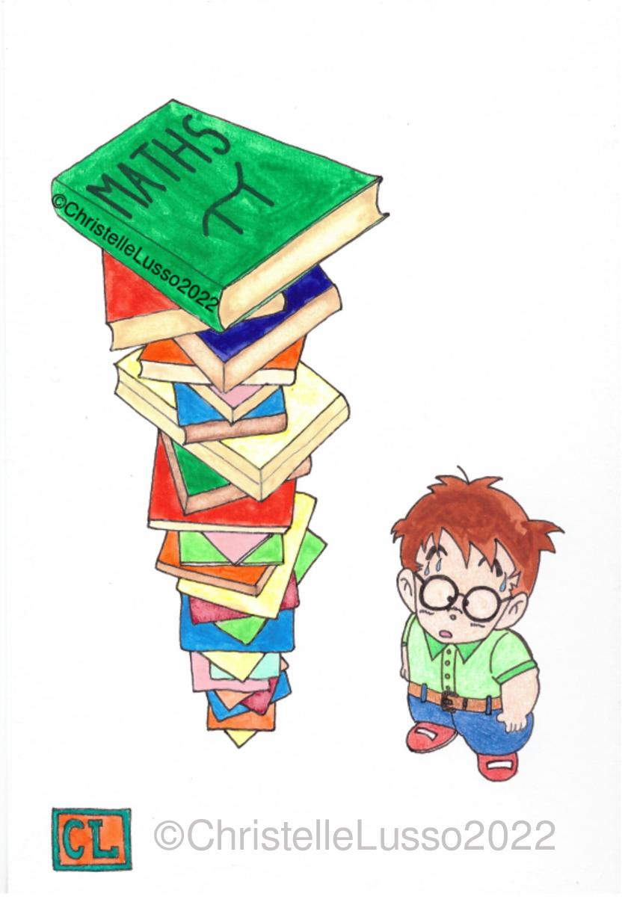
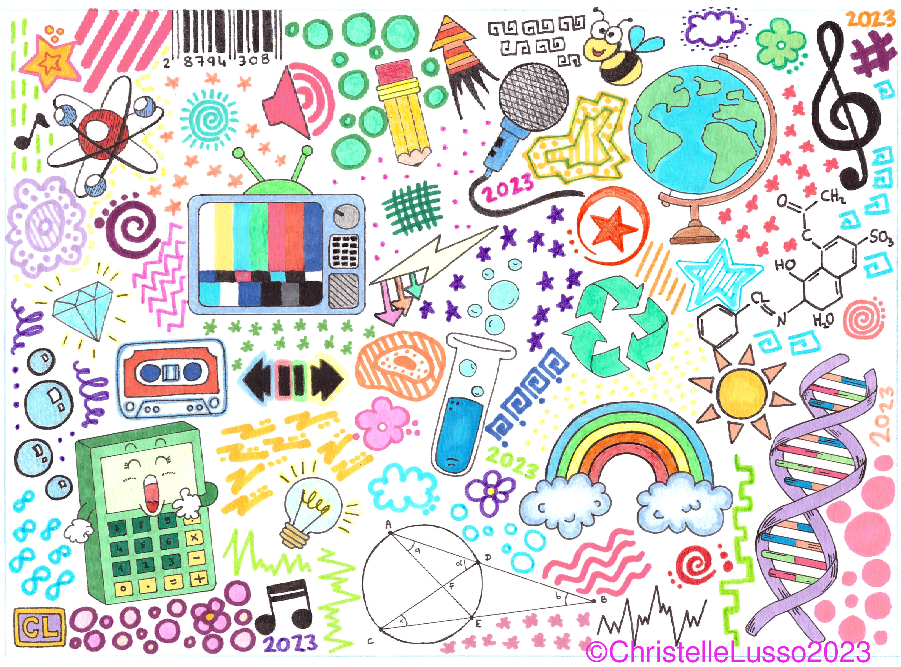
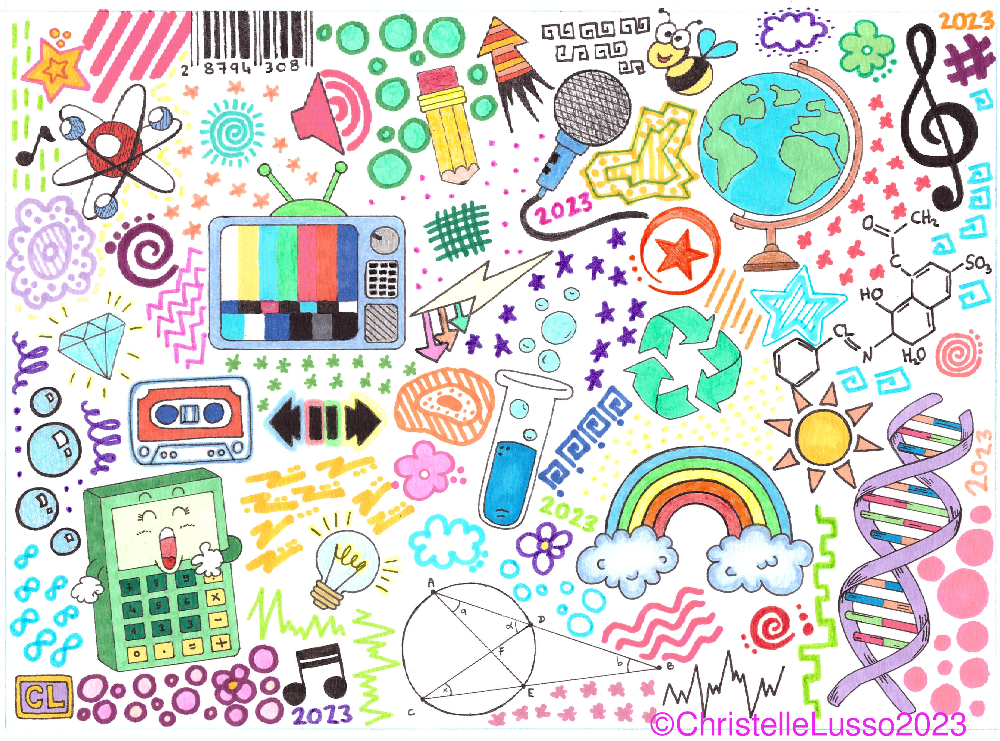
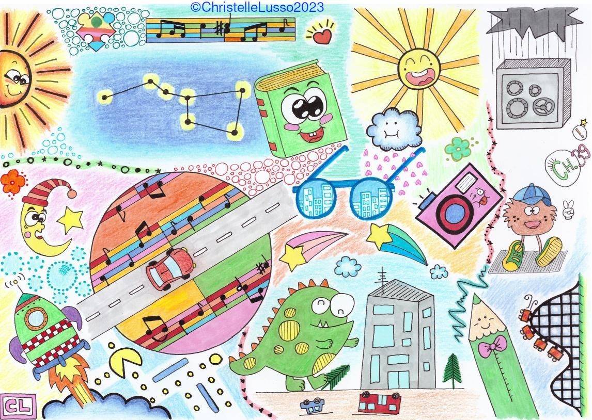
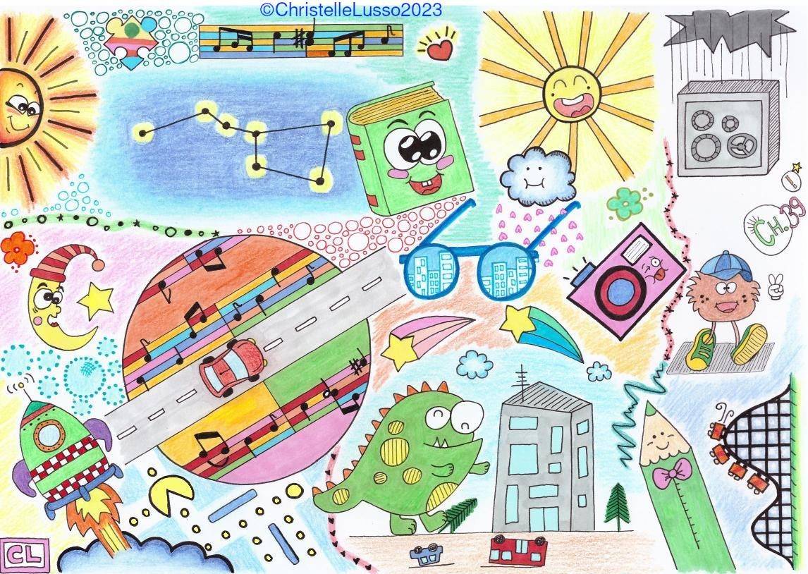

E-mail:
christelle.lusso@gmail.com
christelle.lusso@gmail.com
Working...
I love drawing
 



 



 



Tools: Pencils, markers, alcohol markers, watercolor, drawing gum (masking fluid).
Papers
-
"Numerical modeling of disordered foam in 3D: effective properties by homogenization",
C. Lusso and X. Chateau, 2017, Proceedings in 6th Biot conference [HAL][PDF] -
"Disordered monodisperse 3D open-cell foams: Elasticity, Thermal conductivity and Permeability",
C. Lusso and X. Chateau, 2017. [HAL][PDF] -
"Explicit solutions to a free boundary model for the static/flowing transition in granular flows",
C. Lusso, F. Bouchut, A. Ern, A. Mangeney, 2016, Disc. Cont. Dyn. Syst., reviewed [HAL][PDF] -
"Two-dimensional simulation of viscoplastic Drucker-Prager flows by regularization, application to granular collapse",
C. Lusso, A. Ern, F. Bouchut, A. Mangeney, M. Farin and O. Roche, 2017, J. Comp. Phys. [DOI][HAL][PDF] -
"Geostrophic vs magnetostrophic adjustment and nonlinear magneto-inertia-gravity waves in rotating shallow water magnetohydrodynamics",
V. Zeitlin, C. Lusso and F. Bouchut, 2015, Geophys. Astrophys. Fluid Dynamics [DOI] -
"A free interface model for static/flowing dynamics in thin-layer flows of granular materials with yield: simple shear simulations and comparison with experiments",
C. Lusso, F. Bouchut, A. Ern and A. Mangeney, 2014, Appl. Sci. [DOI][HAL][PDF]
Conferences/Talks
-
"Two-dimensional simulation of viscoplastic Drucker-Prager flows by regularization, application to granular collapse",
LRC Manon (Jussieu, 31 mars 2015) [Abstract][Slides] - Numerical Fluid Mechanics, Henri Poincaré Institute - Paris, 2015
-
"Thin layer model for gravity flows with fluid/solid transition",
National Congress of Numerical Analysis - Superbesse (France), 2012 - Numerical approximations of hyperbolic systems with source terms and applications, Roscoff (France), 2011
PhD Thesis
-
"Numerical modeling of gravitational viscoplastic flows with fluid/solid transition",
C. Lusso, 2013, CERMICS-ENPC [PDF]
Teaching
-
2021/2022:
- Analyse des données - L3 - Licence Analyse économique - Université Paris 2
-
2020/2021:
- Stats1/Maths1 - Licence Sciences Economiques & Gestion - Université Paris 2
- Stats2/Maths2 - Licence Sciences Economiques & Gestion - Université Paris 2
-
2012/2013:
- Linux/Emacs/Scilab/LaTeX - 1ère année Ecole des Ponts ParisTech
- Mathématiques générales - 1ère année ESIEE Engineerings
-
2011/2012:
- Introduction au Calcul Scientifique - 2em année Ecole des Mines ParisTech
- Linux/Emacs/Scilab/LaTeX - 1ère année Ecole des Ponts ParisTech
- Calcul Vectoriel - L1 Maths-Informatique Université Paris 6
- Algèbre 1 - L1 Sciences Physiques & Sciences pour l'ingénieur Université Paris-Est Marne la vallée
- Algèbre 2 - L2 Sciences Physiques Université Paris-Est Marne la vallée
-
2010/2011:
- Analyse numérique et Optimisation - 3em année ESIEE Engineerings